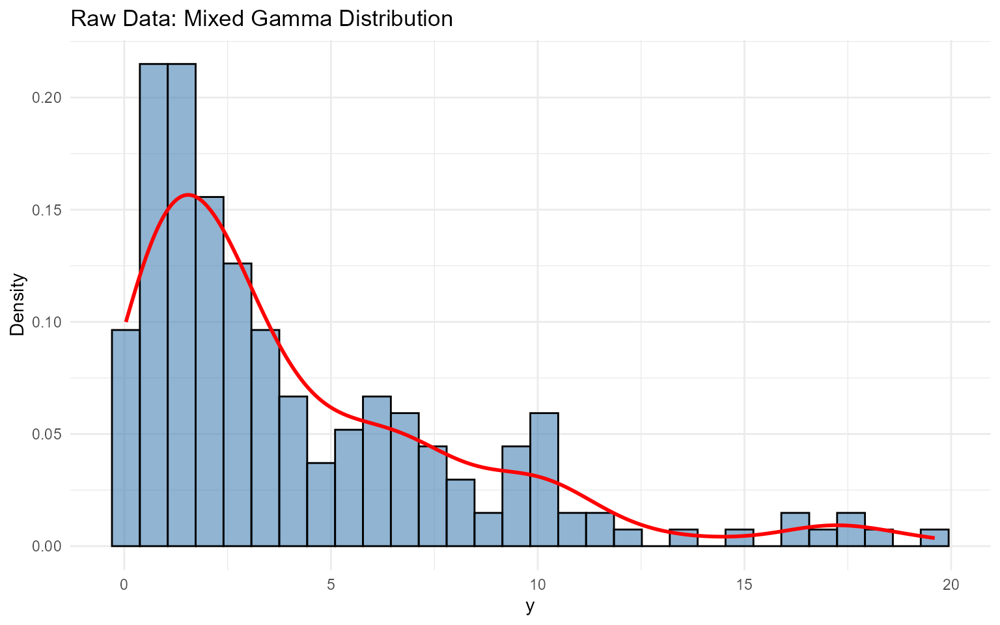
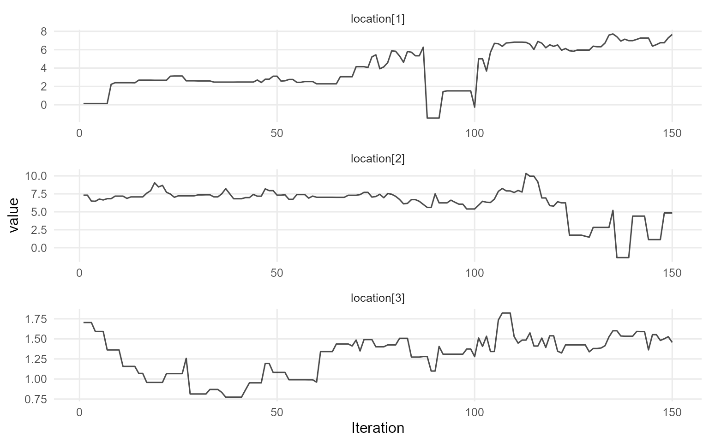
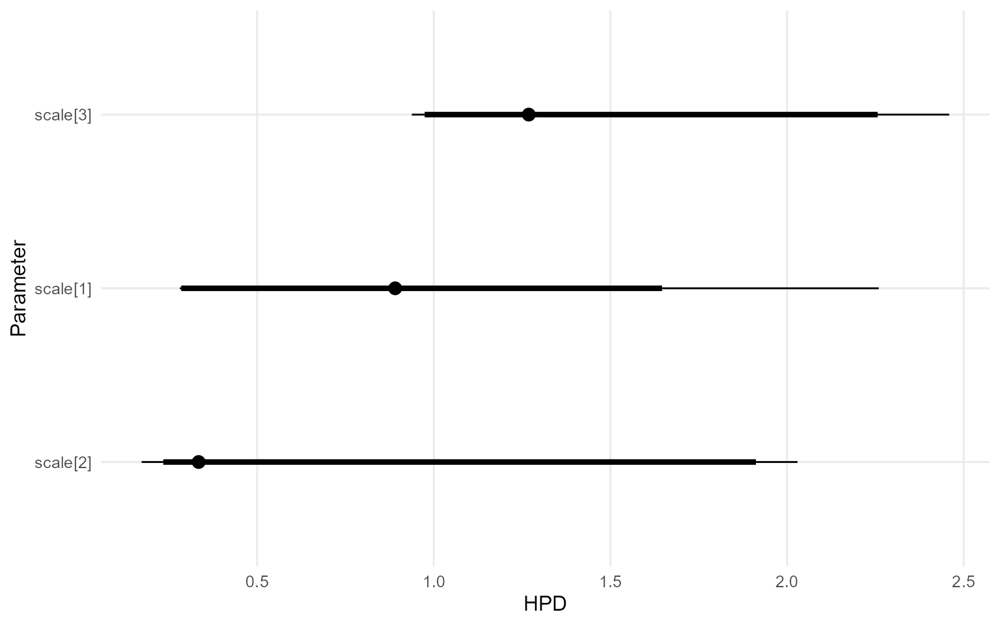
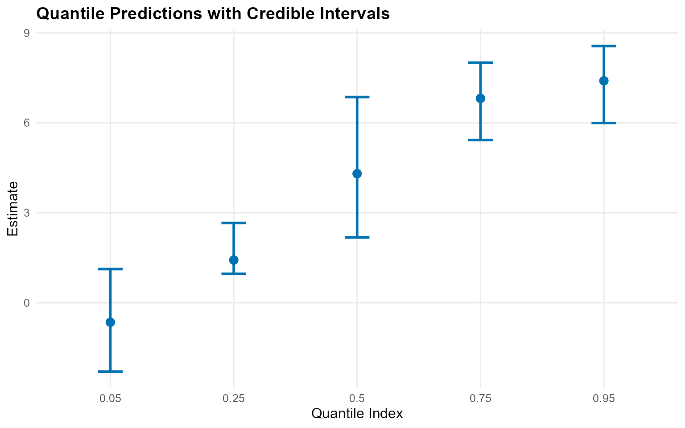
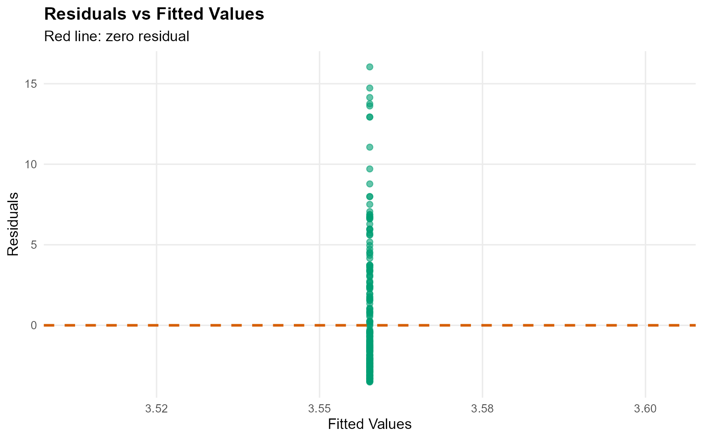
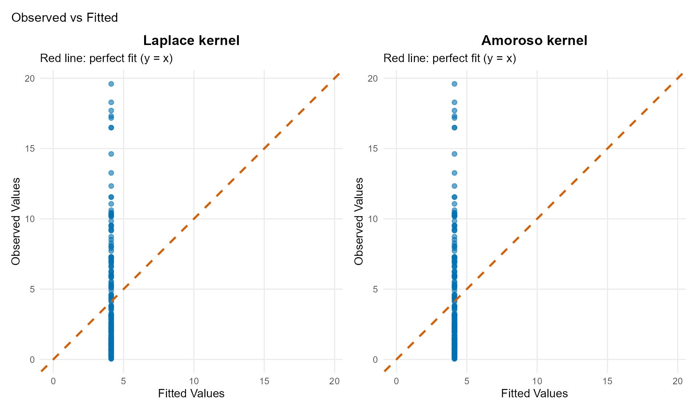

6. Unconditional DPmix with CRP Backend
Source:vignettes/cookbook/v06-unconditional-DPmix-CRP.Rmd
v06-unconditional-DPmix-CRP.RmdCookbook vignette (for the website / historical notes). These files may not match the current exported API one-to-one. Last verified: 2026-01-18.
For the up-to-date workflow, see the main package vignettes (Introduction, Model Spec, MCMC Workflow, Unconditional/Conditional/Causal, Backends, S3 Reference).
Theory (brief)
An unconditional DP mixture models exchangeable outcomes via $f(y)=\\int K(y;\\theta)\\,dG(\\theta)$ with $G \\sim \\mathrm{DP}(\\alpha, G_0)$. The CRP backend implements this using cluster allocations.
Unconditional DPmix: Chinese Restaurant Process (CRP)
Goal: Estimate density of univariate outcome using nonparametric Dirichlet Process mixture with Chinese Restaurant Process backend.
Model: where
Backend: CRP with truncation at max components
Data Setup
[1] "Sample size: 200"[1] "Mean: 4.21476750434594"[1] "SD: 4.10835046697183"[1] "Range: 0.0403111680208858 to 19.6013451514889"
df_data <- data.frame(y = y_mixed)
p_raw <- ggplot(df_data, aes(x = y)) +
geom_histogram(aes(y = after_stat(density)), bins = 30, alpha = 0.6, fill = "steelblue",color = "black") +
geom_density(color = "red", linewidth = 1) +
labs(title = "Raw Data: Mixed Gamma Distribution", x = "y", y = "Density") +
theme_minimal()
print(p_raw)
Model Specification & Bundle
We’ll use the build_nimble_bundle function directly
which handles both specification and bundle creation.
bundle_crp <- build_nimble_bundle(
y = y_mixed,
kernel = "laplace",
backend = "crp",
GPD = FALSE,
components = 3,
alpha_random = TRUE,
mcmc = mcmc
)Building MCMC bundle
bundle_crp <- build_nimble_bundle(
y_mixed,
kernel = "laplace",
backend = "crp",
GPD = FALSE,
components = 3,
alpha_random = TRUE,
mcmc = mcmc
)Summary of MCMC Bundle
summary(bundle_crp)DPmixGPD bundle summary
Field Value
Backend Chinese Restaurant Process
Kernel Laplace Distribution
Components 3
N 200
X NO
GPD FALSE
Epsilon 0.025
Parameter specification
block parameter mode level prior link
meta backend info model crp
meta kernel info model laplace
meta components info model 3
meta N info model 200
meta P info model 0
concentration alpha dist scalar gamma(shape=1, rate=1)
bulk location dist component (1:3) normal(mean=0, sd=5)
bulk scale dist component (1:3) gamma(shape=2, rate=1)
notes
stochastic concentration
iid across components
iid across components
Monitors
n = 4
alpha, z[1:200], location[1:3], scale[1:3]Running MCMC
fit_crp <- load_or_fit("v06-unconditional-DPmix-CRP-fit_crp", run_mcmc_bundle_manual(bundle_crp))Summary of Fitted MCMC model
summary(fit_crp)MixGPD summary | backend: Chinese Restaurant Process | kernel: Laplace Distribution | GPD tail: FALSE | epsilon: 0.025
n = 200 | components = 3
Summary
Initial components: 3 | Components after truncation: 2
WAIC: 930.316
lppd: -376.708 | pWAIC: 88.45
Summary table
parameter mean sd q0.025 q0.500 q0.975 ess
weights[1] 0.493 0.082 0.364 0.51 0.62 2.803
weights[2] 0.382 0.07 0.238 0.38 0.49 13.673
alpha 0.463 0.284 0.09 0.41 1.13 291.26
location[1] 3.237 2.572 1.094 1.535 7.395 20.702
location[2] 5.12 2.644 0.868 6.463 7.943 27.292
scale[1] 0.888 0.421 0.277 1.044 1.531 34.308
scale[2] 0.732 0.624 0.261 0.35 2.124 15.309
params_crp <- params(fit_crp)
params_crpPosterior mean parameters
$alpha
[1] "0.463"
$w
[1] "0.493" "0.382"
$location
[1] "3.237" "5.12"
$scale
[1] "0.888" "0.732"MCMC Diagnostics Plots
plot(fit_crp, params = "location", family = "traceplot")
=== traceplot ===
plot(fit_crp, params = "scale", family = "caterpillar")
=== caterpillar ===
Posterior Predictions
Predictive Density
y_grid <- seq(0, max(y_mixed) * 1.2, length.out = 200)
pred_density <- predict(fit_crp, y = y_grid, type = "density")
plot(pred_density)
Quantile Predictions
quantiles_pred <- predict(fit_crp, type = "quantile",
index = c(0.05, 0.25, 0.5, 0.75, 0.95),
interval = "credible")
quantiles_pred$fit %>%
kbl(caption = "Posterior Predictive Quantiles with Credible Intervals",
align = "c", digits = 3) %>%
kable_styling(bootstrap_options = "striped", full_width = FALSE, position = "center")| estimate | index | lower | upper |
|---|---|---|---|
| -0.65 | 0.05 | -2.293 | 1.12 |
| 1.42 | 0.25 | 0.964 | 2.66 |
| 4.30 | 0.50 | 2.175 | 6.86 |
| 6.82 | 0.75 | 5.424 | 8.01 |
| 7.40 | 0.95 | 5.995 | 8.56 |
plot(quantiles_pred)
Varying Truncation Level (components)
# Demonstrate with one value
bundle_components <- build_nimble_bundle(
y = y_mixed,
kernel = "laplace",
backend = "crp",
components = 5,
mcmc = mcmc
)
fit_components <- load_or_fit("v06-unconditional-DPmix-CRP-fit_components", run_mcmc_bundle_manual(bundle_components))
summary(fit_components)MixGPD summary | backend: Chinese Restaurant Process | kernel: Laplace Distribution | GPD tail: FALSE | epsilon: 0.025
n = 200 | components = 5
Summary
Initial components: 5 | Components after truncation: 3
WAIC: 887.981
lppd: -320.298 | pWAIC: 123.693
Summary table
parameter mean sd q0.025 q0.500 q0.975 ess
weights[1] 0.394 0.051 0.307 0.395 0.515 22.736
weights[2] 0.295 0.056 0.199 0.295 0.39 10.172
weights[3] 0.217 0.038 0.154 0.215 0.29 46.436
alpha 0.703 0.37 0.171 0.613 1.613 150
location[1] 3.657 2.465 0.808 2.289 7.659 10.694
location[2] 4.068 2.928 0.655 2.45 9.09 18.434
location[3] 3.007 3.433 0.592 0.81 10.372 8.343
scale[1] 0.965 0.523 0.28 1.015 2.006 14.348
scale[2] 1.177 0.851 0.294 1.076 2.994 16.202
scale[3] 1.833 1.073 0.284 1.999 3.578 17.734Residual Analysis
Fit <- fitted(fit_components)
kableExtra::kbl(head(Fit), caption = "Fitted Values, Residuals and Credible Interval",
digits = 3, align = "c") %>%
kable_styling(bootstrap_options = "striped", full_width = FALSE, position = "center")| fit | lower | upper | residuals | mean | mean_lower | mean_upper | median | median_lower | median_upper |
|---|---|---|---|---|---|---|---|---|---|
| 3.56 | 2.38 | 4.55 | -2.912 | 3.56 | 2.38 | 4.55 | 3.13 | 2.35 | 4.47 |
| 3.56 | 2.38 | 4.55 | -0.685 | 3.56 | 2.38 | 4.55 | 3.13 | 2.35 | 4.47 |
| 3.56 | 2.38 | 4.55 | 6.285 | 3.56 | 2.38 | 4.55 | 3.13 | 2.35 | 4.47 |
| 3.56 | 2.38 | 4.55 | -0.374 | 3.56 | 2.38 | 4.55 | 3.13 | 2.35 | 4.47 |
| 3.56 | 2.38 | 4.55 | 3.738 | 3.56 | 2.38 | 4.55 | 3.13 | 2.35 | 4.47 |
| 3.56 | 2.38 | 4.55 | 3.530 | 3.56 | 2.38 | 4.55 | 3.13 | 2.35 | 4.47 |
fit.plots <- plot(Fit)
fit.plots$residual_plot
Model Comparison: Different Kernels
Laplace Kernel (Current)
bundle_laplace <- build_nimble_bundle(
y = y_mixed,
kernel = "laplace",
backend = "crp",
components = 5,
mcmc = mcmc
)
fit_laplace <- load_or_fit("v06-unconditional-DPmix-CRP-fit_laplace", run_mcmc_bundle_manual(bundle_laplace))
summary(fit_laplace)MixGPD summary | backend: Chinese Restaurant Process | kernel: Laplace Distribution | GPD tail: FALSE | epsilon: 0.025
n = 200 | components = 5
Summary
Initial components: 5 | Components after truncation: 3
WAIC: 896.756
lppd: -312.429 | pWAIC: 135.948
Summary table
parameter mean sd q0.025 q0.500 q0.975 ess
weights[1] 0.415 0.038 0.35 0.41 0.49 29.262
weights[2] 0.286 0.063 0.194 0.275 0.41 19.433
weights[3] 0.18 0.04 0.104 0.18 0.251 30.176
alpha 0.755 0.376 0.189 0.712 1.606 150
location[1] 6.514 1.346 2.232 6.936 7.589 61.16
location[2] 2.223 1.631 0.577 1.714 7.555 45.299
location[3] 1.37 0.907 0.493 0.891 2.973 53.128
scale[1] 0.39 0.224 0.263 0.33 1.123 33.621
scale[2] 1.573 0.669 0.32 1.457 2.991 34.794
scale[3] 2.425 0.943 0.991 2.371 4.59 64.012Amoroso Kernel (Alternative)
bundle_amoroso <- build_nimble_bundle(
y = y_mixed,
kernel = "amoroso",
backend = "crp",
components = 5,
mcmc = mcmc
)
fit_amoroso <- load_or_fit("v06-unconditional-DPmix-CRP-fit_amoroso", run_mcmc_bundle_manual(bundle_amoroso))
summary(fit_amoroso)MixGPD summary | backend: Chinese Restaurant Process | kernel: Amoroso Distribution | GPD tail: FALSE | epsilon: 0.025
n = 200 | components = 5
Summary
Initial components: 5 | Components after truncation: 1
WAIC: 955.64
lppd: -445.666 | pWAIC: 32.154
Summary table
parameter mean sd q0.025 q0.500 q0.975 ess
weights[1] 0.869 0.164 0.527 0.968 1 4.063
alpha 0.346 0.344 0.014 0.212 1.273 56.418
loc[1] 0.038 0.186 -0.086 0.008 0.681 11.853
scale[1] 1.577 0.675 0.907 1.287 3.683 6.43
shape1[1] 1.847 0.325 1.102 1.941 2.289 2.79
shape2[1] 0.717 0.09 0.61 0.709 0.924 7.017Model Comparison via Predictions
# Compare fitted values using S3 plot method
fitted_laplace <- fitted(fit_laplace)
fitted_amoroso <- fitted(fit_amoroso)
# Plot diagnostics for both models
g.plot <- plot(fitted_laplace)
l.plot <- plot(fitted_amoroso)
p_gamma <- g.plot$observed_fitted_plot +
ggtitle("Laplace kernel") +
theme(plot.title = element_text(hjust = 0.5))
p_lognormal <- l.plot$observed_fitted_plot +
ggtitle("Amoroso kernel") +
theme(plot.title = element_text(hjust = 0.5))
p_gamma + p_lognormal +
plot_layout(ncol = 2) +
plot_annotation(
title = "Observed vs Fitted"
) +
theme(plot.title = element_text(hjust = 0.5))
Key Takeaways
- CRP Backend: Flexible component allocation, ideal for unknown mixture complexity
- components Parameter: Higher components allows more components but increases computation
- Kernel Choice: Gamma suitable for positive, skewed data
- Diagnostics: Check convergence (Rhat, ESS) and posterior predictive fit
- Next: Compare with Stick-Breaking (SB) backend in vignette 5